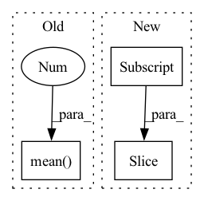

Pattern ID :14662
Before Change
elif layer > self.layers:
raise ValueError(f"Number of layers specified ({layer}) exceed layers in model ({self.layers})!")
representations1 = hidden_states[torch.arange(num_inputs)[:, None], query_idx1].mean(1)
representations2 = hidden_states[torch.arange(num_inputs)[:, None], query_idx2].mean(1 )
else:
representations1 = list(map(lambda x: x[torch.arange(num_inputs)[:, None], query_idx1].mean(1), hidden_states))
representations2 = list(map(lambda x: x[torch.arange(num_inputs)[:, None], query_idx2].mean(1), hidden_states))
After Change
layer = self.layers
elif layer > self.layers:
raise ValueError(f"Number of layers specified ({layer}) exceed layers in model ({self.layers})!")
representations1 = torch.stack([hs.squeeze()[idx[0]:idx[1] ].mean(0) for hs, idx in zip(hidden_states.split([1] * num_inputs), query_idx1)])
representations2 = torch.stack([hs.squeeze()[idx[0]:idx[1]].mean(0) for hs, idx in zip(hidden_states.split([1] * num_inputs), query_idx2)])
else:
representations1 = list(map(lambda x: torch.stack([hs.squeeze()[idx[0]:idx[1]].mean(0) for hs, idx in zip(x.split([1] * num_inputs), query_idx1)]), hidden_states))In pattern: SUPERPATTERN
Frequency: 3
Non-data size: 3
Instances Fragment ID: 48088397
Project Name: kanishkamisra/minicons
Commit Name: b9f76e2dfc167677a5e1a4877b8bc76799a01974
Time: 2021-08-21
Author: menogetusername@gmail.com
File Name: minicons/cwe.py
M Class Name: CWE
N Class Name: CWE
M Method Name: extract_paired_representations(3)
N Method Name: extract_paired_representations(3)
M Parent Class: object
N Parent Class: object
M File Name: minicons/cwe.py
N File Name: minicons/cwe.py
M Start Line: 151
M End Line: 170
N Start Line: 151
N End Line: 170
Before Change
layer = self.layers
elif layer > self.layers:
raise ValueError(f"Number of layers specified ({layer}) exceed layers in model ({self.layers})!")
representations = hidden_states[torch.arange(num_inputs)[:, None], query_idx].mean(1 )
else:
representations = list(map(lambda x: x[torch.arange(num_inputs)[:, None], query_idx].mean(1), hidden_states))
return representationsAfter Change
elif layer > self.layers:
raise ValueError(f"Number of layers specified ({layer}) exceed layers in model ({self.layers})!")
// representations = hidden_states[torch.arange(num_inputs)[:, None], query_idx].mean(1)
representations = torch.stack([hs.squeeze()[idx[0]:idx[1] ].mean(0) for hs, idx in zip(hidden_states.split([1] * num_inputs), query_idx)])
return representations
Fragment ID: 48088399
Project Name: kanishkamisra/minicons
Commit Name: b9f76e2dfc167677a5e1a4877b8bc76799a01974
Time: 2021-08-21
Author: menogetusername@gmail.com
File Name: minicons/cwe.py
M Class Name: CWE
N Class Name: CWE
M Method Name: extract_representation(3)
N Method Name: extract_representation(3)
M Parent Class: object
N Parent Class: object
M File Name: minicons/cwe.py
N File Name: minicons/cwe.py
M Start Line: 109
M End Line: 132
N Start Line: 110
N End Line: 132
Before Change
if self.proj is not None and self.pre_proj:
x = self.proj(x)
x = x.mean(-2 ) / x_len.float().unsqueeze(-1)
if self.proj is not None and not self.pre_proj:
x = self.proj(x)After Change
x = self.pre_proj(x)
if x_len is not None:
x = [x[b, : x_len[b] ].mean(0) for b in range(len(x))]
x = torch.stack(x, dim=0)
else:
x = x.mean(1) Fragment ID: 48088390
Project Name: atosystem/speechclip
Commit Name: b2d7d1450922b5f68626bcc7751faf4feca14ed5
Time: 2022-03-19
Author: b06901020@ntu.edu.tw
File Name: avssl/module/pooling.py
M Class Name: MeanPoolingLayer
N Class Name: MeanPoolingLayer
M Method Name: forward(3)
N Method Name: forward(3)
M Parent Class: nn.Module
N Parent Class: nn.Module
M File Name: avssl/module/pooling.py
N File Name: avssl/module/pooling.py
M Start Line: 22
M End Line: 28
N Start Line: 46
N End Line: 58